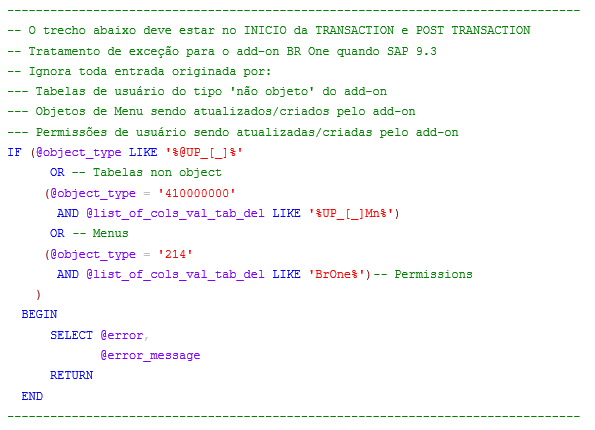

Inicialização do add-on BR One
Caso o add-on não esteja definida como Obrigatório (recomendado) ou automático, será necessário iniciá-lo manualmente. Para isto, deve ser acessado a tela “Administrador add-on” pelo caminho *”Administração/Add-Ons/Administrador add-on”.

Selecione o add-on e clique em Início.

O add-on será iniciado e a mensagem abaixo será apresentada. Enquanto a mensagem estiver na tela é necessário aguardar sem abrir novas telas ou menus. Se ocorrer algum erro na inicialização, pode ser consultado o log de inicialização.

Add-on em inicialização. Aguarde….
Ao iniciar o add-on, pode ocorrer de aparecer uma tela solicitando usuário e senha do banco de dados (outra ocasião que poderá aparecer telas pedindo informações para conexão ao BD é durante a instalação.
Esta tela somente será apresentada na inicialização, caso no processo de instalação o usuário conclua sem digitar as informações de conexão ao BD ou caso estas tenham sido alteradas.
Para digitar os dados é necessário aguardar todo o processo de inicialização do add-on ser concluído.

Se os dados estiverem incorretos a seguinte mensagem será apresentada:

BR One :: Dados incorretos.
Se os dados estiverem corretos a seguinte mensagem será apresentada:

BR One :: Dados gravados com sucesso. Realizar processo novamente.
Durante o processo de inicialização do BR One, os módulos existentes na licença serão inicializados um a um. No final da inicialização de todos os módulos, será exibida uma mensagem informando sucesso:

BR One :: Módulos inicializados.
Nesta etapa também serão criados eventuais campos e tabelas necessárias ao processo, então na primeira execução após a atualização de versão é necessário que todos os usuários estejam fora SAP para não gerar inconsistências.

BR One :: Campo ‘x’ criado na tabela ‘x’

BR One :: Tabela ‘x’ criada na base ‘x’
Após a criação de campos ou tabelas a seguinte mensagem será exibida:

A estrutura do banco de dados foi modificada. Para resumir o processo, todas as janelas serão fechadas. Continuar a adição do campo definido pelo usuário?
Visando otimizar o desempenho e a redução de tempo de inicialização do add-on, a verificação e atualização da estrutura do banco de dados é somente realizada uma vez por dia e ocorre no primeiro client que logar no SAP ou caso haja alguma atualização de versão. Caso seja necessário revalidar a estrutura de BD deve ser utilizado a opção “Revalidar estrutura do BR One” no modo de Administração.
Após o add-on ser iniciado, aparecerá uma nova opção no menu principal, chamado BR One.

Caso ao utilizar a versão SAP Business One 9.3 perceba-se uma lentidão excessiva no momento de inicialização do add-on, é recomendável incluir o seguinte código na Transaction Notification:
